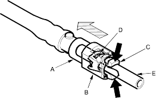
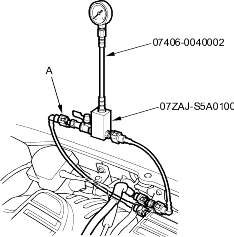

- Disconnect the quick-connect fitting (A): Hold the connector (B) with one hand and squeeze the retainer tabs (C) with the other hand to release them from the locking pawls (D). Pull the connector off.
NOTE:
- Prevent the remaining fuel in the fuel feed pipe or hose from flowing out with a rag or shop towel.
- Be careful not to damage the pipe (E) or other parts.
- Do not use tools.
- If the connector does not move, keep the retainer tabs pressed down, and alternately pull and push the connector until it comes off easily.
- Do not remove the retainer from the pipe; once removed, the retainer must be replaced with a new one.

- After disconnecting the quick-connect fitting, check it for dirt or damage (see step 4 on page 11-135).
- Fuel pressure gauge 07406-0040002
- Fuel pressure gauge set 07ZAJ-S5A0100
- Relieve the fuel pressure (see page 11-130).
- Disconnect the quick-connect fitting (A). Attach the fuel pressure gauge set and fuel pressure gauge.

- Start the engine and let it idle.
- If the engine starts, go to step 5.
- If the engine does not start, go to step 4.
- Check to see if the fuel pump is running: listen to the fuel fill port with the fuel fill cap removed. The fuel pump should run for 2 seconds when the ignition switch is first turned on.
- If the pump runs, step 5.
- If the pump does not run, perform the fuel pump circuit troubleshooting (see page 11-127).
- Read the pressure gauge. The pressure should be 270-320 kpa (2.8-3.3 kgf/cm2, 40-47 psi)
- If the pressure is OK, the test is complete.
- If the pressure is out of specification, replace the fuel pressure regulator and the fuel filter (see page 11-138), and recheck the fuel pressure.